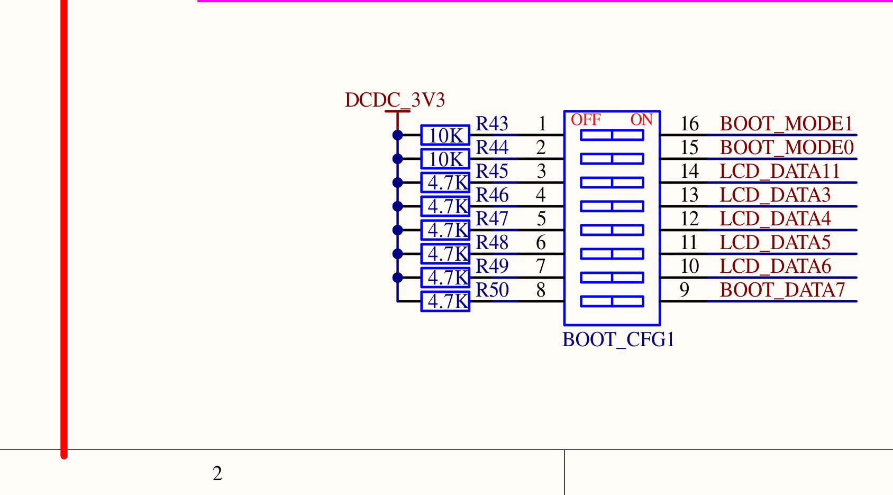

欧姆定律与分压：板上一半的电阻都在干这件事
打开原理图，你会发现大量电阻成对出现：两颗一串、从中点取一个电压——这就是分压。它既是「把 12V 缩到 3V 给 ADC 看」的手段，也是「给 DDR 一个 0.675V 参考」「给 DCDC 定住 3.3V」的核心。这一章从 U=IR 推到基尔霍夫，再推到「带载后分压为什么塌」，最后用本板四个真实电路验算一遍。

读完这一章，你应该能
- 写出 U=IR、P=UI，并解释电阻为什么会发热（微观层面）
- 独立推导分压公式，说清「空载电压」与「带载电压」的差别
- 用戴维南等效算出分压点的内阻，判断它能不能带负载、能不能接 ADC
- 验算本板四个分压：BOOT 上拉、eMMC 10k、DDR VREF 1.5k、DCDC 反馈 49.9k/15k
- 在板上实测并用「上下电流是否相等」判断节点是否有额外支路
1.2.1U=IR：一个式子的四种用法
欧姆定律：U = I × R。前提是「线性电阻、稳态」。二极管、MOS、三极管不直接服从它，但可以在某个工作点附近线性化（后文讲小信号时会用到）。
它的三个变形在工程里各有专属用途：
- I = U/R：知道压降和电阻算电流。这是「用采样电阻测电流」的全部原理。
- U = IR：知道电流和电阻算压降。这是「算 PCB 走线压降、算上拉能否拉到高电平」的依据。
- R = U/I：通电测出电压电流，反推电阻。万用表电阻档其实就是给一个已知电流、测电压。
- P = UI = I²R = U²/R：算发热。三者等价，选哪个取决于你已知什么——已知电流用 I²R 最省事。
电阻为什么发热：电子撞晶格
电子在电场下加速，但平均自由程很短（铜里约几十纳米），每走一小段就撞上晶格原子，把动能交给晶格，表现为晶格振动加剧——宏观上就是温度上升。所以发热量取决于「单位时间有多少电子撞多少次」，也就是 I²R：电流翻倍，发热四倍。这是电源与功率设计里最常被低估的一项。
顺带解释「电阻为什么有阻值」：材料本身的晶格缺陷、杂质、声子散射，共同决定了电阻率 ρ。所以 R = ρL/S —— 越长越阻、越粗越通。这条公式不只用于电阻，也用于算 PCB 走线。
算例：PCB 走线的电阻与压降
1oz 铜厚 35µm，走线宽 0.254mm（10mil），长 10mm。铜的 ρ ≈ 1.72×10-8 Ω·m：
S = 0.254×10-3 × 35×10-6 ≈ 8.89×10-9 m²
R = 1.72×10-8 × 0.01 / 8.89×10-9 ≈ 19mΩ
看起来很小，但 1A 电流就是 19mV 压降、19mW 发热。若这条线要过 2A（比如 USB 5V 供电、DCDC 输出），压降 39mV；如果只走 0.2mm 宽、20mm 长，阻值翻倍到 76mΩ，2A 就是 152mV——3.3V 的 IO 电源在板那头只剩 3.15V，这就是为什么电源要走宽、要多打过孔、要铺铜。
1.2.2串并联与基尔霍夫：所有电路题的通用解法
串联：电流相同，电压相加。R总 = R1 + R2 + …，每个电阻上的压降按阻值比例分配。分压公式就是从这来的。
并联：电压相同，电流相加。1/R总 = 1/R1 + 1/R2 + …；两个电阻并联 R总 = R1R2/(R1+R2)（积除以和）。
背后是两条比欧姆定律更根本的定律：
- KCL（节点电流守恒）：流入节点的电流之和 = 流出之和。它来自电荷守恒。
- KVL（回路电压守恒）：沿任意闭合回路，电压升与电压降的代数和为零。它来自能量守恒。
有了这两条，任何电阻网络都能解：设未知节点电压，对每个节点写一条 KCL（各支路电流用 (Ui−Uj)/R 表示），解方程组。手算两三个节点足够，多了就该上仿真。
算例：两节点网络
3.3V 经 R1=10k 到节点 A，A 经 R2=10k 到 GND，A 还经 R3=10k 到节点 B，B 经 R4=10k 到 GND。求 A、B 电压。
对 A 写 KCL：(3.3−VA)/10k = VA/10k + (VA−VB)/10k；对 B：(VA−VB)/10k = VB/10k。第二式给出 VA=2VB，代入第一式：3.3−2VB = 2VB+VB → 3.3 = 5VB → VB=0.66V，VA=1.32V。检查：A 点电流入 0.198mA，出 0.132+0.066=0.198mA ✓。
1.2.3分压：公式、带载塌陷与戴维南等效
电源 Uin，上臂 R1，下臂 R2，中点输出：
I = Uin / (R1 + R2) → Uout = I × R2 = Uin × R2 / (R1 + R2)
这就是空载分压。它的成立前提是：中点没有接任何负载。一旦接上负载 RL，R2 与 RL 并联，等效下臂变小，输出立刻下降——「算对了但不工作」的经典根源。
把分压点看成一个「电源 + 内阻」（戴维南等效）：
- 开路电压 Uoc = Uin×R2/(R1+R2)；
- 等效内阻 Rth = R1∥R2 = R1R2/(R1+R2)（把 Uin 短路到地后，从输出点看进去的电阻）；
- 接负载后 Uout = Uoc × RL/(Rth+RL)，误差 = Rth/(Rth+RL)。
结论很直接：要带负载，Rth 必须远小于 RL。工程判据取 Rth ≤ 0.1×RL 时误差约 9%，≤0.05 时约 5%。想更准，就只能加运放跟随器（输入阻抗高、输出阻抗低），或者干脆用 LDO。
1.2.4本板四个真实分压：逐个验算
例 1：BOOT 拨码的上拉（10k × 2 + 4.7k × 6）
先纠正一个常见误记：MINI 的 BOOT 上拉不是清一色 4.7k。看原图——R43/R44 是 10k，喂 BOOT_MODE1/BOOT_MODE0；R45–R50 是 4.7k，喂 LCD_DATA11、LCD_DATA3/4/5/6 与 BOOT_DATA7（这些脚在启动瞬间被采样为 BOOT_CFG）。

算电流：10k 那两根 I = 3.3/10k = 0.33mA；4.7k 那六根 I = 3.3/4.7k = 0.70mA。全 OFF 时总电流 = 2×0.33 + 6×0.70 ≈ 4.9mA。这个数不大，但它是「常驻」的：只要上电就存在，做待机电流预算时必须算进去（第 4.1 章）。
为什么 10k 与 4.7k 不一样？BOOT_MODE 只在上电复位那一刻被采样，之后不再关心速度，用 10k 省电；BOOT_CFG 脚同时是 LCD 数据线，启动后要当普通 IO 用，需要更强的上拉保证上升沿，因此用 4.7k。这是本板少见的「同一功能、两种阻值」的例子，读图时要看网络名而不是凭印象。
例 2：eMMC 的 10k 上拉
CMD 与 DATA0–7 共 9 根，各 10k 上拉到 DCDC_3V3（CORE p4 的 R9/R10/R38 一组）。常态电流 3.3/10k = 0.33mA/根 → 9 根约 3.0mA。
为什么是 10k 而不是 100k？因为初始化阶段（开漏模式，400kHz）要靠上拉把线拉起来。上升时间近似 tr ≈ 2.2×R×C。若线容 C≈20pF：
- R = 10k → tr ≈ 440ns，占 400kHz 半周期（1.25µs）的 35%，可接受；
- R = 100k → tr ≈ 4.4µs，超过半周期，通信直接失败；
- R = 1k → tr ≈ 44ns，速度够但常态耗 3.3mA/根 → 30mA，不可接受。
所以 10k 是「速度 vs 功耗」的折中。这类「算上升时间选上拉」的题，面试和实战都会考。
例 3：DDR 的 VREF（1.5k / 1.5k）
CORE p3 右下角虚线框：DRAM_1V35 经 R54、R55 各 1.5k 分压，中点即 DRAM_VREF，并挂 C65 2µF 与 C66 0.1µF。
- UREF = 1.35 × 1.5k/(1.5k+1.5k) = 0.675V（正好一半，DDR 的读参考就是电源中点）；
- 分压电流 I = 1.35/3k = 0.45mA（注意不是 0.9mA——总阻是 3k，750Ω 是并联后的等效内阻）；
- Rth = 750Ω；每颗电阻功耗 P = I²R = (0.45mA)²×1.5k ≈ 0.30mW，可忽略；
- VREF 输入是高阻（内部比较器），750Ω 内阻不影响直流精度，但影响噪声——所以并联 2µF + 0.1µF，把交流阻抗压到几十 mΩ 级（第 3.4 章有推导）。
例 4：DCDC 反馈（49.9k / 15k）：反向推出芯片基准
回到图 1-3。FB 脚内部把分压中点稳到一个固定基准 Vref，于是：
Uout = Vref × (1 + R55/R68) = Vref × (1 + 49.9k/15k) = Vref × 4.327
手册不写 Vref 时怎么办？用板上另一路反推：U6 那颗（DC IN 侧）上臂 R54=84.5k、下臂 R69=15k，比值 6.633。两路输出分别是 3.3V 与 5V 附近，于是：
- 若 Vref=0.768V：3.3V 路 = 0.768×4.327 = 3.32V；5V 路 = 0.768×6.633 = 5.09V。两个都对得上。
- 若 Vref=0.8V：3.46V 与 5.31V，偏高约 5%，不像设计值。
- 若 Vref=0.6V：2.60V 与 3.98V，明显偏低。
这就是「读图 + 计算 + 交叉验证」的完整闭环：不是背一个 Vref，而是用两路互相印证把芯片参数逼出来。实测时在 TP 点量到 3.32V，就说明这个推断成立。
另外注意 R52（1k）与 C11（102 = 1nF）串在 FB 上臂旁，这叫前馈（feedforward）：高频时 C11 相当于短路，把上臂「短路」，瞬间提高反馈比例、加快环路响应。拐点约 f = 1/(2π×1k×1nF) ≈ 160kHz，正好落在开关频率（几百 kHz）之下。少了它也能工作，但负载阶跃时过冲会更大。
速算技巧：只记「下臂占比」
分压比 = R2/(R1+R2) = 1/(1+R1/R2)。心算时先算 R1/R2：49.9/15 ≈ 3.33 → 输出 = Vref×(1+3.33)=4.33×Vref。反馈电路都用这个形式，因为它直接对应「放大倍数」。
1.2.5上拉电阻到底怎么选：四个约束
板上每一颗上拉都在同时满足四件事，选值就是在这四件事之间取交集：
- 拉得动：开漏输出低时，IOL = (VDD−VOL)/R 必须小于器件允许的 IOL（比如 3mA），且 VOL 要在逻辑低门限以下。
- 拉得快：tr ≈ 2.2RC 必须小于协议规定的上升时间（I2C 100kHz 是 1µs，400kHz 是 300ns）。
- 不漏电：节点上的漏电流（IO 漏电 + PCB 表面漏电 + 电容漏电）在 R 上产生的压降不能把电平拉低。
- 不费电：常态电流 × 路数 × 24h 要能接受。
算一个 I2C 的例子：MINI p1 的 R40/R42/R57 是 4.7k，若总线电容 100pF，tr ≈ 2.2×4.7k×100pF ≈ 1.03µs。这对 100kHz（上限 1µs）刚好卡线，对 400kHz（上限 300ns）就不合格——所以高速 I2C 要么降到 2.2k，要么减少总线电容（少挂器件、短走线）。板上写 4.7k 不代表它能跑 400kHz，这是读图时最容易忽略的一层。
1.2.6实测三步：断电测 R、上电测 U、再反算 I
- 断电测电阻：红黑笔点 R1（或 R2）两端，读阻值。注意在路测量会被并联支路拉低：若读数明显小于标称（比如 10k 读出 5k），说明该节点还有别的直流通路；要确认就拆一端。
- 上电测电压：黑笔固定 GND，红笔点中点读 Uout；再量 Uin 与 R1 两端压降。注意万用表输入阻抗 10MΩ，对 10k 级分压影响约 0.1%，可忽略；对 1MΩ 级分压就有 10% 误差——这也是「高阻节点不能直接拿表测」的原因。
- 反算电流：I上 = (Uin−Uout)/R1；I下 = Uout/R2。两者应当相等（空载时）。若 I上 明显大于 I下，说明中点有额外电流流去了别处——漏电、某个芯片输入电流过大、或者你漏看了一条支路。
第三步是整套流程里最有价值的一步：它把「电压对不对」升级成「电流从哪来、到哪去」，直接把故障范围缩到一个节点。
真实事故：100k/100k 分压监测 12V
某板用 100k/100k 分压把 12V 缩到 6V 给 ADC，空载计算完全正确。实测 ADC 读数随采样率跳变，误差 15%。原因：100k∥100k = 50k 的源阻抗，遇上 ADC 采样瞬间接入的几 pF 采样电容，采样窗口内充不满。改成 10k/10k 并在中点加 0.1µF 后恢复。「算对了」不等于「能用」，中间隔着一个源阻抗。
1.2.7五个设计陷阱
- 用分压直接给负载供电。内阻太大，一加载就塌。要驱动负载就加跟随器或用 LDO。
- 为省电把阻值选得过大。Rth 变大后，噪声、漏电、ADC 采样电容全都开始影响精度。
- 忽略电阻精度。两颗 1% 最坏带来约 ±2% 的比例误差；再叠加基准电压容差（通常 ±1~2%）就超标。要求高的地方用 0.1% 薄膜。
- 忽略温漂。厚膜 100ppm/°C，85°C 时再偏 0.6%，与 1% 精度同量级；精密分压必须选 25ppm 薄膜，且两颗同批同向。
- 分压点走线太长。高阻节点像天线，容易拾取 DCDC 的开关噪声；要走短线、就近加电容、远离电感与开关节点（SW、BST）。